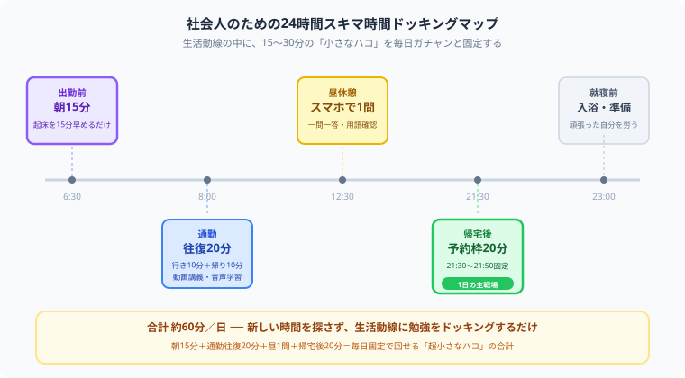

社会人が勉強時間を確保する方法7選｜仕事と両立して続けるコツ【2026年版】
「資格を取って人生変えたいけれど、仕事が忙しくて帰ったらクタクタ……勉強時間を確保するなんて絶対に無理だよ！」と、暗い部屋でスマホをいじりながらフリーズしていませんか？（笑）大学のヘビーな講義やテスト、バイトをこなしながら、毎日狂ったように会計の猛勉強を両立させている僕の視点から、根性に一切頼らずに1日の時間をハックして勉強を『歯磨きレベルの日常』に変える【無敵のスキマ時間確保術】を熱くナビゲートします！最後まで読んで「これなら俺にもできそう」と思えたら、記事の最後にある【いいねボタン】をポチッと押してもらえると、めちゃくちゃ励みになります！
その「平日にまとまった2時間」、僕なら絶対に組みません
社会人が勉強時間を確保できないのは当たり前
社会人が勉強を続けにくいのは、意志が弱いからではありません。仕事、通勤、家事、付き合い、疲労回復まで含めると、自由に使える時間はかなり細切れになります。学生のように「まとまった2〜3時間」を毎日取る前提で計画すると、最初から破綻しやすいのです。
特に資格勉強は短期で成果が見えにくく、「今日はやらなくても大丈夫かも」と先延ばししやすい性質があります。だからこそ、まず必要なのは根性論ではなく、忙しい日でも崩れにくい勉強設計です。
勉強時間を確保する前に知っておきたい考え方
毎日2時間より、毎日15分の方が強い
社会人学習では「理想の長時間学習」より「現実に回る短時間学習」の方が価値があります。1日2時間を週2回より、15〜30分を毎日積み上げる方が、習慣として定着しやすく、再開コストも低くなります。
“時間ができたらやる”はほぼ起きない
空いたらやる、落ち着いたらやる、週末にまとめてやる——この考え方だと、勉強は後回しになりがちです。社会人のスケジュールは、意外と勝手に埋まります。勉強を続ける人は、空き時間を待つのではなく、先に勉強時間を予約しています。
1日単位より1週間単位で考える
平日にまったく勉強できない日があっても普通です。そこで自己嫌悪に陥るより、「今週合計で何時間取れたか」で見る方が継続しやすくなります。忙しい社会人ほど、日次ではなく週次で管理する方が現実的です。

出勤前・通勤・昼休憩・帰宅後——生活動線の中に小さな勉強のハコを捻出して固定化するイメージ図
社会人が勉強時間を確保する方法7選
朝は仕事や予定に潰されにくく、最も再現性の高い時間帯です。最初から1時間取ろうとせず、15分だけ起床を早めるところから始めると、負担が小さいまま習慣化しやすくなります。
電車通勤なら動画講義、音声学習、一問一答、単語帳などが向いています。「通勤中は必ずこれをやる」と決めるだけで、平日に積み上がる学習量はかなり増えます。
昼休みは重いインプットより、復習や暗記系に向いています。問題演習の見直し、用語確認、前日に覚えた内容の反復など、脳の負荷が軽い学習を置くと続きやすいです。
夜に勉強するなら「疲れてなければやる」では弱いです。21:30〜22:00のように、先に時間枠を決めておく方が実行率は上がります。短くても、予定化することがポイントです。
平日は30分×4日、土日は各2時間、のように1週間トータルで設計すると、忙しい日があっても崩れにくくなります。毎日完璧を求めるより、週全体で帳尻を合わせる方が長続きします。
疲れ切った日は、長文読解や重い演習は続きません。そんな日のために、5分でできる暗記、音声、復習だけの“最低ラインメニュー”を作っておくと、ゼロの日を減らせます。
勉強した時間や日数を可視化すると、「ちゃんと積み上がっている」という実感が生まれます。継続できる人は、やる気を待つのではなく、記録を見て次の行動につなげています。
時間を確保しても続かない人の共通点
最初の計画が理想的すぎる
「平日2時間、休日5時間」などの高すぎる計画は、崩れた瞬間に自己否定につながります。最初は物足りないくらいの計画の方が、結果的に積み上がります。
記録がなく、手応えが残らない
勉強しても記録が残らないと、達成感が薄くなります。成果が見えにくい活動だからこそ、勉強時間や日数は明示的に残した方が良いです。
できなかった日の立て直し方がない
1日サボっただけで「もうダメだ」と感じる人は多いです。大事なのはサボらないことではなく、サボった翌日にすぐ戻る仕組みを持つことです。再開のハードルを下げることが継続力になります。
社会人の1週間スケジュール例
| 曜日 | 時間帯 | 内容 | 目安時間 |
|---|---|---|---|
| 月 | 朝 + 通勤 | テキスト10分 + 音声20分 | 30分 |
| 火 | 昼休み + 夜 | 一問一答15分 + 復習20分 | 35分 |
| 水 | 通勤のみ | 暗記カード・音声学習 | 20分 |
| 木 | 朝 + 夜 | 問題演習15分 + 見直し25分 | 40分 |
| 金 | 最低ライン日 | 5分復習だけでもOK | 5〜15分 |
| 土 | 午前 | まとまった演習・模試 | 90〜120分 |
| 日 | 午前 or 夜 | 復習と翌週の計画 | 60〜90分 |
続けるには「やる気」より「仕組み」が必要
やる気がある日に頑張るだけでは、忙しい週に止まります。社会人の勉強は、宣言、記録、達成感、再開しやすさまで含めて仕組み化した方が強いです。小さな成功体験を日々積み上げることで、勉強は“頑張るもの”から“当たり前にやるもの”に変わっていきます。
⚔ 勉強時間は、気合いより仕組みで続く
Study Questでは、毎日の目標宣言・学習記録・継続の見える化をまとめて管理できます。
忙しい社会人でも、勉強を止めにくい流れを作れます。完全無料。
まとめ
- 社会人が勉強時間を確保できないのは自然なこと
- まとまった時間を待つより、短時間を固定する方が続く
- 朝・通勤・昼休み・夜の予約枠を使うと安定しやすい
- 1日単位より1週間単位で学習時間を管理すると立て直しやすい
- 継続にはやる気より、記録と仕組みが効く
仕事や講義、バイトでクタクタになりながらも、それでも自分の未来を変えるために机に向かう——正直、それだけでもう十分にすごいことです。僕自身、大学とバイトと会計の勉強を同時に回していて、心が折れそうになる日もあります。でも、そんな仲間がこの記事を読んでくれていると思うと、僕はまだまだ頑張れます。この記事が「これなら続けられそう」につながったら、僕の執筆のモチベーション維持のために、この下にある【いいねボタン】をポチッと押してもらえると、めちゃくちゃ嬉しいです！お互い、無理せず、でも着実に前へ進みましょう！